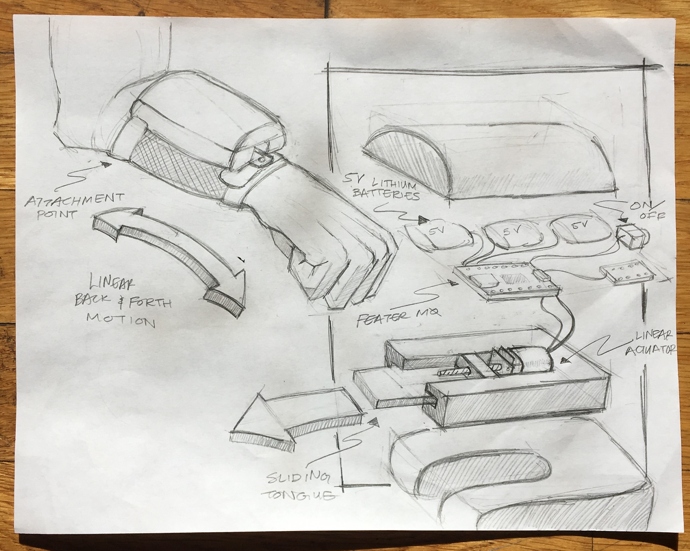
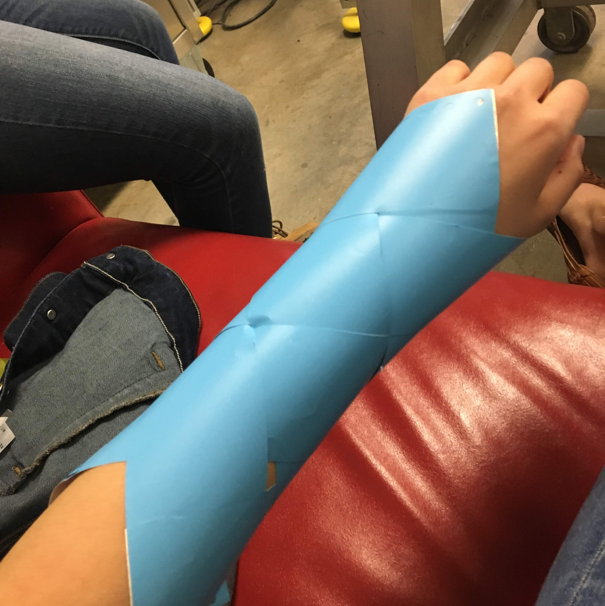
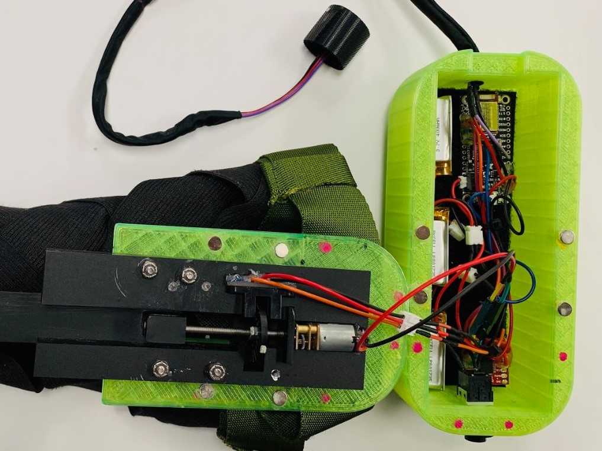
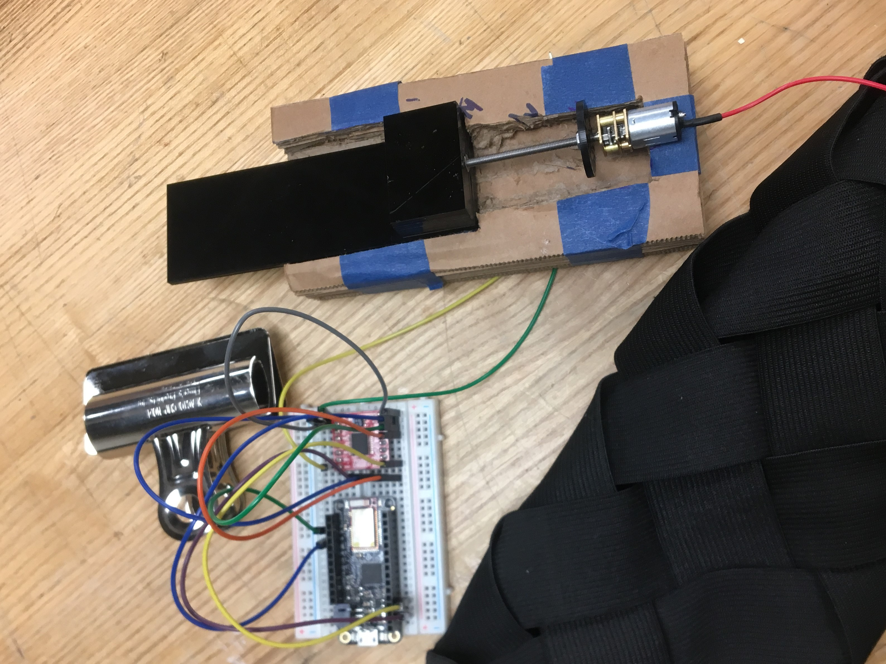
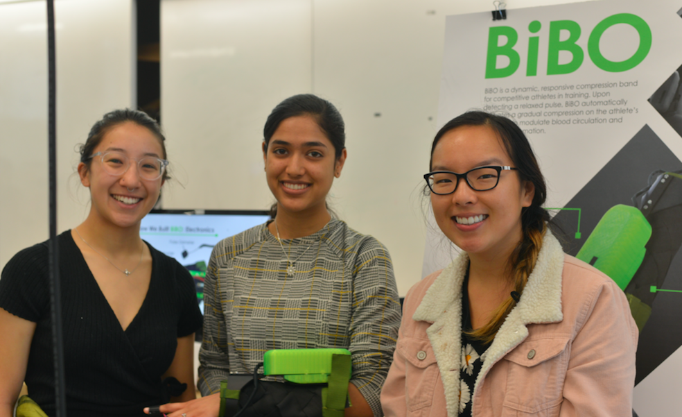

Introduction
Bibo is a compression therapy armband, developed as a final
project for Critical Making with Janaki Vivrekar, James Smith, and
Melissa Su. With context-aware modes of sensing an athlete’s
heartbeat, BiBO equips the wearer with an automated regulator for
real-time muscle recovery. Upon detecting a relaxed pulse, BiBO
automatically activates a gradual compression on the athlete’s arm to help modulate blood circulation and reduce inflammation.

Problem Space
Challenges with popular
compression therapy methods
include excessive device handling
during the workout, causing
breaks in the fluidity of athletes’ workout
routines. Alternatively, athletes may tend to
schedule compression therapy sessions or
appointments with professionals at times
that work conveniently with their schedules,
and not necessarily those that are convenient
for their bodies. So we asked ourselves ... how we might
improve the experience of compression
therapy for athletes and decided to focus
on dynamizing and automating compression
therapy for athletes, and integrating the
process into workout routines?
Origami Experiments
We approached the goal of instrumenting
compression with a creative mindset, taking
inspiration from highly flexible origami patterns.
Origami is an elegant medium that had the potential to
compress and expand in natural ways. We experimented with
a herrignbone tesselation, a moving flexagon, and a magic ball
type fold. We eventually found the most potential in a Chinese
finger trap pattern.



Mechanics
We developed an armband that consisted of
a Chinese Finger trap-type elastic weave
that was pulled by a linear actuator powered
by a DC motor equpped with a gearbox and threaded rod.
Using a pulse oximeter that attaches to the user’s finger,
Bibo turns on and off in response to the user’s heart rate
lowering.


3D Modelling
I used Fusion 360 to model a bigger casing for the
chassis and the electronics. The bottom part of the
casing is rounded to make for a more ergonomic fit
around the arm. It also has a channel that allows the linear
actuator to pull the arm band. We chose to print it in neon
green because it evoked a sense of modern sportiness.
The casing also has a thin opening in the back that allows
a nylon band to go through it and secure the case to the
arm.
Future Directions
Moving forward, I’d like to invest more time
into making the linear actuator component
more powerful while also refining the size of
the electronics chassis. I could also see connecting the pulse
oximeter to a bluetooth enabled microcontroller so we
could develop responsive bands for other parts of the body
like the legs and mid-drift.

Photo courtesy of the Berkeley Center for New Media